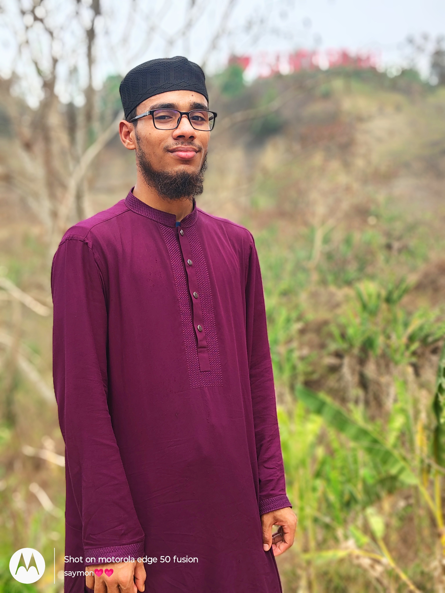

আমার শিক্ষাজীবন
শিক্ষা মানুষের জীবনকে আলোকিত করে এবং জ্ঞান মানুষকে সঠিক পথের সন্ধান দেয়। নিয়মিত পড়াশোনা ও জ্ঞানচর্চার মাধ্যমে নিজেকে যোগ্য করে গড়ে তোলার চেষ্টা করি।
জ্ঞান অর্জন, নিজেকে গড়ে তোলা এবং ভালো কিছু শেখা ও ভাগ করে নেওয়ার পথে আমার ছোট্ট পরিচয়। এই ওয়েবসাইটে আমার পরিচিতি, শিক্ষাজীবন, আগ্রহ ও লেখালেখি সম্পর্কে জানতে পারবেন।

শিক্ষার্থী · জ্ঞান অন্বেষণকারী
নিজের পথচলা, লক্ষ্য এবং শেখার আগ্রহের সংক্ষিপ্ত পরিচিতি।
আমি আশিক হোসেন সাইমন। আমি একজন শিক্ষার্থী। ইসলামী জ্ঞান, আরবি ভাষা, শিক্ষা ও প্রযুক্তি বিষয়ে জানতে এবং নতুন কিছু শিখতে ভালোবাসি।
এই ওয়েবসাইটটি আমার ব্যক্তিগত পরিচিতি ও শেখার অভিজ্ঞতা সুন্দরভাবে তুলে ধরার একটি ছোট উদ্যোগ।
আমার চিন্তাভাবনা, আগ্রহ ও ভবিষ্যৎ পরিকল্পনার সংক্ষিপ্ত বিবরণ।
শিক্ষা মানুষের জীবনকে আলোকিত করে এবং জ্ঞান মানুষকে সঠিক পথের সন্ধান দেয়। নিয়মিত পড়াশোনা ও জ্ঞানচর্চার মাধ্যমে নিজেকে যোগ্য করে গড়ে তোলার চেষ্টা করি।
একজন জ্ঞানী, সৎ, আদর্শবান ও দায়িত্বশীল মানুষ হিসেবে নিজেকে গড়ে তোলা এবং অর্জিত জ্ঞান মানুষের কল্যাণে কাজে লাগানো আমার অন্যতম লক্ষ্য।
জ্ঞান অর্জনের কোনো শেষ নেই। প্রতিটি দিন নতুন কিছু শেখার এবং ভালো কাজের মাধ্যমে মানুষের উপকার করার একটি সুযোগ। আল্লাহ আমাদের সবাইকে উপকারী জ্ঞান অর্জন ও সে অনুযায়ী আমল করার তাওফিক দিন। আমিন।
আমার শিক্ষাজীবনের সঙ্গে যুক্ত প্রতিষ্ঠানসমূহ।
Dhaka, Bangladesh
বিভাগ: আল-হাদিস অ্যান্ড ইসলামিক স্টাডিজ
উচ্চশিক্ষাইসলামী শিক্ষার প্রতিষ্ঠান
মাদ্রাসা শিক্ষাযেসব বিষয়ে জানতে, শিখতে ও কাজ করতে আগ্রহী।
কুরআন, হাদিস, ফিকহ ও ইসলামী ইতিহাস অধ্যয়ন।
আরবি ব্যাকরণ, শব্দার্থ ও ভাষা চর্চা।
ডিজিটাল দক্ষতা, ওয়েবসাইট ও নতুন প্রযুক্তি শেখা।
শিক্ষামূলক লেখা, নোট ও উপকারী বিষয়বস্তু তৈরি।
সহজভাবে শেখানো এবং শিক্ষার্থীদের শেখার সহায়তা করা।
নিয়মিত শেখা, ভালো অভ্যাস ও ইতিবাচক চিন্তা।
কুরআন, সহিহ হাদিস ও নির্ভরযোগ্য ইসলামি জ্ঞানের আলোকে সাজানো পাঠ ও প্রবন্ধ।
কুরআন, হাদিস, আকিদা, ফিকহ ও ইসলামী জীবনবিষয়ক আলোচনা।
আর্টিকেল পড়ুন →কিয়ামত, হাশরের ময়দান ও মহান শাফাআত সম্পর্কে কুরআন ও হাদিসভিত্তিক আলোচনা।
বিস্তারিত পড়ুন →সময়কে সঠিকভাবে কাজে লাগানো এবং দায়িত্বশীল জীবন গঠনের শিক্ষা।
বিস্তারিত পড়ুন →শিক্ষার্থীদের জন্য সহজ ভাষায় সাজানো নোট, ভাষা শিক্ষা ও উপকারী বিষয়।
আরও পড়ুন →নোট: আর্টিকেল লিংকগুলো কাজ করতে সংশ্লিষ্ট HTML ফাইল একই GitHub repository-তে রাখতে হবে।
সামাজিক যোগাযোগমাধ্যমে আমার সঙ্গে যুক্ত থাকুন।
আপনার পরামর্শ, মতামত ও সহযোগিতাকে স্বাগত জানাই।